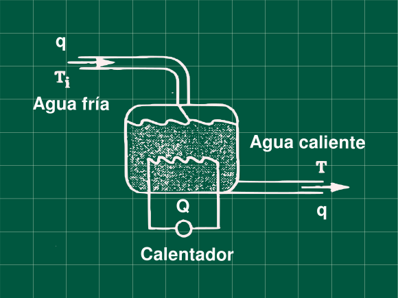

Problema 5.1 (Process Dynamics, Modelling and Control - Babatunde, Harmon)

Para el proceso mostrado en la figura, un calentador electrico de agua. En un día particular el tanque trabajaba a temperatura de 80 °C, y de repente el calentador se rompe y dejar de suministrar calor, a este tiempo el tanque con 100 L de capacidad operaba con un caudal 10 L/min, la temperatura del agua fria es de 30 °C. Esto pasa durante 5 minutos, luego el calentador detiene el flujo de agua(debido al diseño del calentador).
Desarrolle un apropiado modelo matemático para este proceso, y resolviendo la ecuación diferencial encuentre la temperatura del tanque a los 5 minutos
Resolución
Escribiendo nuestro balance de energía
ρCpVdtdT=qρCp(Ti−T)+Q .... (1)
Balance en estado estacionario
0=qρCp(Tis−Ts)+Qs .... (2)
Calculamos la ecuación (2) el valor de Qs que nos a servir luego
0=qρCp(30−80)+Qs
Qs=50qρCp
Restando (1) con (2) y tranformando a variables desviación
ρCpVdtd(T−Ts)=qρCp[(Ti−Tis)−(T−Ts)]+Q−Qs
ρCpVdtdT′=qρCp[Ti′−T′]+Q′
Aplicando la transformada de Laplace y despejando la función transferencia
ρCpVsT′(s)=qρCp[Ti′(s)−T′(s)]+Q′(s)
Q′(s)T′(s)=VρCps+qρCp1 .... (3)
Describimos la perturbación del enunciado sabemos que el calor suministrado baja cero cuando t>0.
Q′(t)=Q(t)−Qs{Qs−Qs0−Qssi t<0si t>0
Q′(t)={−Qssi t<0si t>0
Q′(t)=−Qs
Aplicando al transformada de Laplace
Q′(s)=−sQs
Reemplazando en la ecuacion (3) y sabiendo que Qs=50qρCp
T′(s)=−s(VρCps+qρCp)50qρCp
Operando y reemplazando valores conocidos V=100 y q=10
T′(s)=−s(Vs+q)50=−s(10s+1)50
Antitransformando, recuerde T′(t)=T(t)−Ts
T′(t)=50(e−t/10−1)
T(t)=50(e−t/10−1)+80
Hallando la temperatura a t = 5 min
T(t=5)=50(e−5/10−1)+80
T(t=5min)=60.33 °C
Referencias
- Babatunde, A. O.; Harmon, W. R. (1994). process dynamics, modeling, and control. OXFOR UNIVERSITY PRESS. ISBN 0-19-509119-1